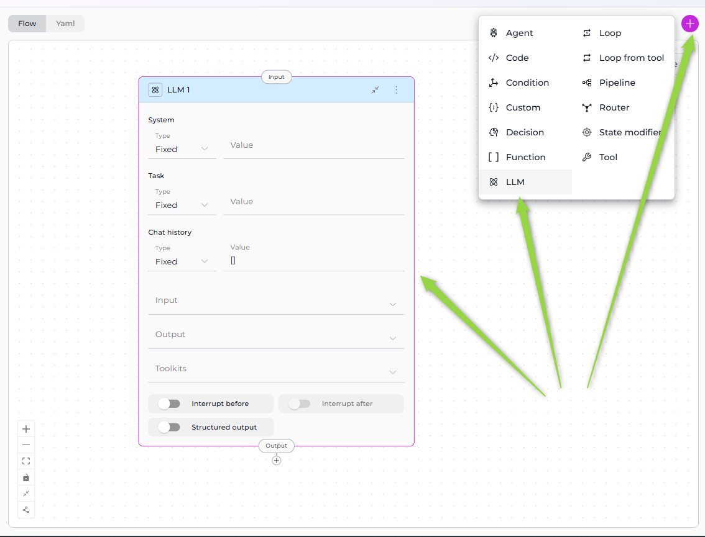
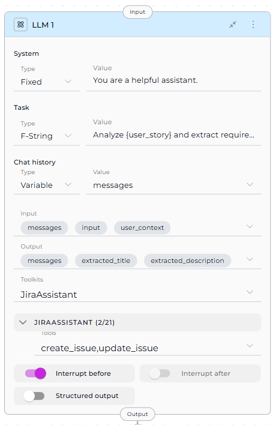
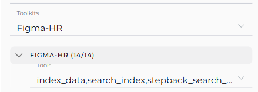
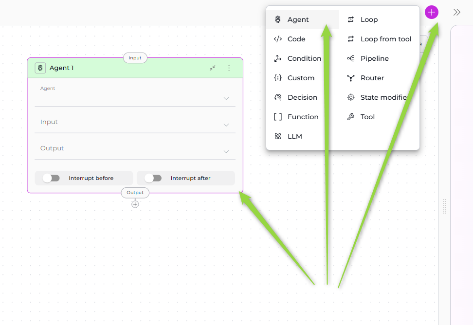
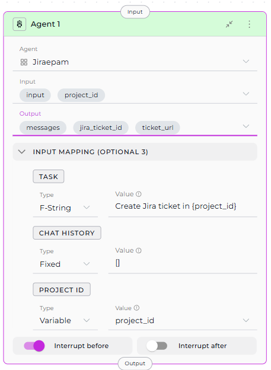

Interaction Nodes¶
Interaction Nodes enable your pipeline to communicate with AI models and delegate tasks to specialized agents. These nodes form the "intelligent" layer of your workflow, allowing pipelines to generate text, analyze content, make decisions, and leverage pre-built AI capabilities.
Available Interaction Nodes:
- LLM Node - Directly interact with Large Language Models
- Agent Node - Delegate tasks to pre-configured AI agents
LLM Node¶
The LLM Node provides direct access to Large Language Models (GPT-4, Claude, etc.) for text generation, analysis, extraction, and decision-making. It's the most versatile interaction node, supporting chat history, tool calling, and structured output extraction.
Migrating from v1.x LLM Nodes
If you have existing pipelines with old LLM node format, see the v2.0.0 Migration Guide for updating to the new System/Task structure.

Purpose¶
Use the LLM Node to:
- Generate text based on prompts and context
- Analyze content and extract insights
- Extract structured data from unstructured text
- Have conversations with full chat history support
- Call tools via function calling
- Make intelligent decisions based on context
Parameters¶
| Parameter | Purpose | Type Options & Examples |
|---|---|---|
| System | Provide system-level instructions that set the LLM's behavior, role, or constraints | Fixed - Static system messageExample: "You are a helpful assistant." F-String - System message with variablesExample: "You are a {role} expert." Variable - System message from stateExample: custom_system_prompt |
| Task | Define the specific task or user request the LLM should process | Fixed - Static taskExample: "Summarize the text." F-String - Task with embedded variablesExample: "Analyze {user_story} and extract requirements." Variable - Task from state variableExample: task_instruction |
| Chat History | Provide conversation context from previous interactions | Fixed - No historyExample: [] F-String - Formatted conversation historyExample: "Previous conversation: {messages}" Variable - Use conversation historyExample: messages |
| Input | Specify which state variables the LLM node reads from | Default states: input, messagesCustom states: Any defined state variables Example: - input- messages- user_context |
| Output | Define which state variables the LLM's response should populate | Default: messagesCustom states: Define specific variables Example: - extracted_title- extracted_description- messages |
| Toolkits | Bind external tools and MCPs to the LLM for function calling | Toolkits - Service integrations MCPs - Model Context Protocol servers Example: jira_toolkit:- create_issue- update_issueslack_toolkit:- send_message |
| Interrupt Before | Pause pipeline execution before this node | Enabled / Disabled Example: enabled or disabled |
| Interrupt After | Pause pipeline execution after this node for inspection | Enabled / Disabled Example: enabled or disabled |
| Structured Output | Force LLM to return data in structured format matching output variables | Enabled - Response parsed into state variables Disabled - Free-form text to messagesExample: true or false |

Yaml Configuration
nodes:
- id: Analyze_feedback
type: llm
prompt:
type: string
value: ''
input:
- input
- user_context
output:
- extracted_title
- messages
structured_output: false
transition: END
input_mapping:
system:
type: fixed
value: You are a helpful assistant
task:
type: fstring
value: Analyze {user_story} and extract requirements.
chat_history:
type: variable
value: messages
tool_names:
JiraAssistant:
- create_issue
- update_issue
interrupt_before:
- Analyze_feedback
state:
messages:
type: list
input:
type: str
extracted_title:
type: str
value: ''
user_context:
type: str
value: ''
Important: Messages in Output for Interrupts
When using structured output with interrupts, include messages in the output variables for meaningful interrupt output.
Toolkit Selection Process
- Select Toolkit/MCP from dropdown
- Tool dropdown appears for that toolkit
- Select specific tools to make available to the LLM
- Repeat for multiple toolkits (each gets its own tool dropdown)

Best Practices¶
1. Always Include messages in Output for Interrupts¶
When using structured output with interrupts:
✅ Correct:
output: ["extracted_data", "status", "messages"]
structured_output: true
❌ Avoid:
output: ["extracted_data", "status"] # Missing messages
structured_output: true
2. Use Appropriate Prompt Types¶
- Fixed: For static, unchanging instructions
- F-String: When you need to inject specific state variables
- Variable: When the entire prompt comes from state
3. Limit Tool Binding¶
Only bind tools the LLM actually needs:
✅ Good: Select specific relevant tools
toolkits:
jira_toolkit:
- create_issue
- update_issue
❌ Avoid: Binding all tools unnecessarily
toolkits:
jira_toolkit:
- [all 50+ tools selected] # Confuses LLM
4. Structure Your Prompts¶
Use clear, structured prompts:
✅ Good:
prompt:
type: "fstring"
value: |
## Task
Analyze the user story: {user_story}
## Requirements
Extract:
1. Title
2. Description
3. Acceptance Criteria
## Output Format
Provide structured data for each field.
❌ Avoid: Vague prompts
prompt:
type: "fixed"
value: "Do something with the data"
5. Specify Output Variables Clearly¶
Match output variables to what you're extracting:
✅ Good:
output: ["jira_project_id", "epic_id", "user_story_title", "messages"]
structured_output: true
6. Use Chat History Wisely¶
- Include
messagesin input when context matters - Use
[](empty array) for stateless single-turn requests
7. Test with Interrupts¶
Use interrupts during development to verify LLM outputs:
interrupt_after: true # Pause after this node to inspect results
8. Handle Tool Calling Errors¶
When using toolkits, account for potential tool failures in your prompt:
prompt:
type: "fixed"
value: |
Use available tools to complete the task.
If a tool fails, explain what went wrong and suggest alternatives.
Agent Node¶
The Agent Node allows you to delegate tasks to pre-configured AI agents that have been added to your pipeline. Instead of configuring LLM behavior from scratch, you leverage existing agents with specialized capabilities, prompts, and toolkits.

Purpose¶
Use the Agent Node to:
- Delegate complex tasks to specialized agents
- Reuse existing agents across multiple pipelines
- Maintain consistency with pre-configured agent behavior
- Simplify workflows by avoiding duplicate LLM configuration
- Leverage agent-specific toolkits and integrations
Parameters¶
| Parameter | Purpose | Type Options & Examples |
|---|---|---|
| Agent | Select which pre-configured agent to execute | Only agents added to the pipeline appear in dropdown How to Add: 1. Go to Pipeline Configuration > Toolkits 2. Select agents 3. Added agents become available Example: jira_assistant_agent |
| Input | Specify which state variables the agent reads from | Default states: input, messagesCustom states: Any defined state variables Example: - project_id- input |
| Output | Define which state variables the agent's response should populate | Default: messagesCustom states: Specific variables Example: - jira_ticket_id- ticket_url- messages |
| Task (Input Mapping) | Map the specific task instruction for the agent | Fixed - Static taskExample: "Create a Jira ticket for this issue." F-String - Task with variablesExample: "Create Jira ticket in {project_id}: {user_story}" Variable - Task from stateExample: task_instruction |
| Chat History (Input Mapping) | Map conversation context to provide to the agent | Fixed - No historyExample: [] F-String - Formatted historyExample: "Previous context: {messages}" Variable - Use conversation historyExample: messages |
| Custom Variables (Input Mapping) | Map agent-specific custom variables if defined | Fixed - Static valueF-String - Value with variablesVariable - Value from stateExample (if agent has jira_project):jira_project: PROJ-123 |
| Interrupt Before | Pause pipeline execution before this node | Enabled / Disabled Example: enabled or disabled |
| Interrupt After | Pause pipeline execution after this node for inspection | Enabled / Disabled Example: enabled or disabled |

Yaml Configuration
nodes:
- id: Agent 1
type: agent
input:
- input
- project_id
output:
- jira_ticket_id
- ticket_url
- messages
transition: END
input_mapping:
task:
type: fstring
value: Create Jira ticket in {project_id}
chat_history:
type: fixed
value: []
project_id:
type: variable
value: project_id
tool: Jiraepam
interrupt_before:
- Agent 1
state:
messages:
type: list
input:
type: str
project_id:
type: str
value: ''
jira_ticket_id:
type: str
value: ''
ticket_url:
type: str
value: ''
Agent Selection and Input Mapping
The Input Mapping section appears after you select an agent. Every agent includes TASK and CHAT_HISTORY mappings. If the agent has custom variables, they also appear as mapping options.
Add Agents to Pipeline First
Before using Agent Node, ensure agents are added in Pipeline Configuration > Toolkits section. Only added agents appear in the dropdown.
Best Practices¶
1. Add Agents to Pipeline First¶
Ensure the agent is added in Pipeline Configuration > Toolkits section before using Agent Node.
2. Map Task Clearly¶
Provide clear, specific task instructions:
✅ Good:
task:
type: "fstring"
value: "Create Jira ticket in project {project_id} with title '{title}', description '{description}', and priority {priority}."
❌ Avoid:
task:
type: "variable"
value: "input" # Too vague
3. Use Chat History Appropriately¶
- With History: Use when agent needs conversation context
- Without History: Use
[]for independent, stateless tasks
4. Map Custom Variables Correctly¶
If agent has custom variables, map them to pipeline state:
✅ Good:
input_mapping:
jira_project:
type: "variable"
value: "project_id"
sprint_number:
type: "variable"
value: "current_sprint"
5. Include messages in Output¶
For debugging and continuity, include messages:
output: ["agent_result", "messages"]
6. Use Interrupts for Testing¶
Test agent behavior with interrupts:
interrupt_after: true # Review agent output
7. Reuse Agents Across Pipelines¶
Create specialized agents once, reuse in multiple pipelines for consistency.
8. Handle Agent Failures¶
Consider error handling in subsequent nodes:
- id: "check_agent_result"
type: "router"
condition: "agent_result is not None"
routes: ["success_path", "error_path"]
Interaction Nodes Comparison¶
| Feature | LLM Node | Agent Node |
|---|---|---|
| Purpose | Direct LLM interaction with full control | Delegate to pre-configured specialized agents |
| Configuration | Configure prompt, system, task from scratch | Use existing agent configuration |
| Prompt | Define in node (Fixed/F-String/Variable) | Inherited from agent, customized via Task mapping |
| Toolkits | Select Toolkits & MCPs, choose specific tools | Agent's toolkits are pre-configured |
| Input | State variables (input, messages, custom) | State variables (input, messages, custom) |
| Output | State variables (messages, custom) | State variables (messages, custom) |
| Input Mapping | Not applicable (direct state access) | Map pipeline state to agent parameters (Task, Chat History, custom variables) |
| Structured Output | Supported (enable via toggle) | Depends on agent configuration |
| Conversation History | Controlled via Chat history parameter | Controlled via CHAT_HISTORY mapping |
| Reusability | Node-specific configuration | Agent can be reused across pipelines |
| Flexibility | Highly flexible, configure everything | Limited to agent's design |
| Complexity | More setup required | Simpler, leverages existing agent |
| Use Case | Custom tasks, one-off requests, full control | Specialized tasks, consistent behavior, reusable workflows |
When to Use LLM Node¶
✅ Choose LLM Node when you need:
- Full control over prompts and behavior
- Custom tool binding for specific workflow
- One-off or unique LLM interactions
- Structured output extraction
- Simple text generation without pre-configuration
When to Use Agent Node¶
✅ Choose Agent Node when you:
- Have an existing agent that does exactly what you need
- Want to reuse agent logic across multiple pipelines
- Need consistent behavior from pre-configured agents
- Want to simplify pipeline by delegating to specialists
- Have agents with specific domain knowledge or toolkits
Combining Both
You can use both node types in the same pipeline: * LLM Node for custom, ad-hoc processing * Agent Node for specialized, reusable tasks
Related
- Nodes Overview - Understand all available node types
- Execution Nodes - Call external tools and execute code
- States - Manage data flow through pipeline state
- Connections - Link nodes together
- YAML Configuration - See complete node syntax examples
- Updating LLM Nodes (v2.0.0 Migration) - Guide for migrating old LLM nodes to new format